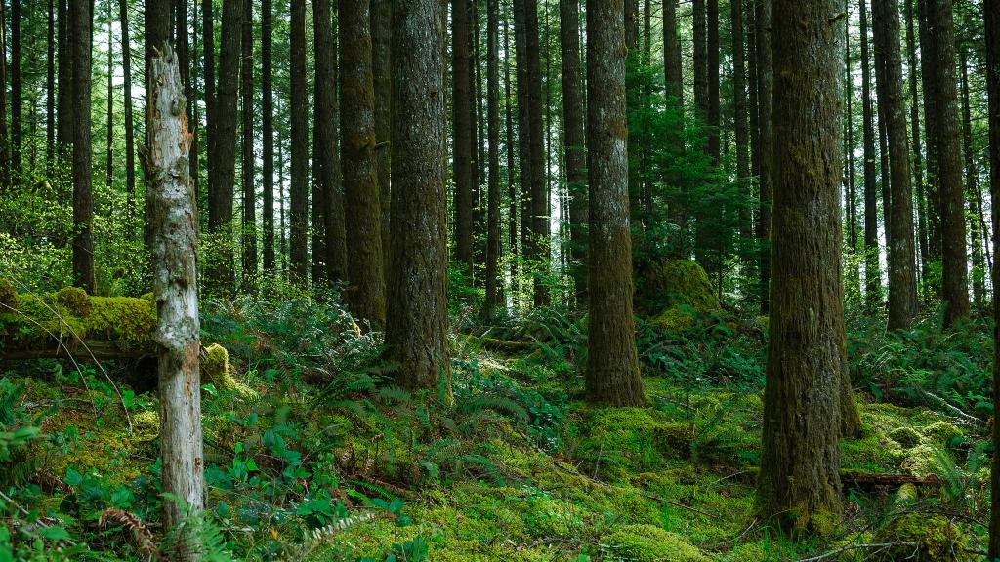
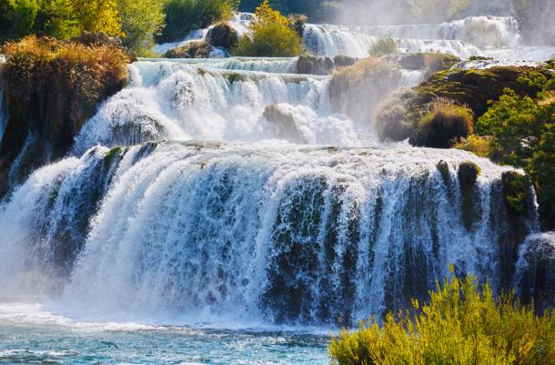
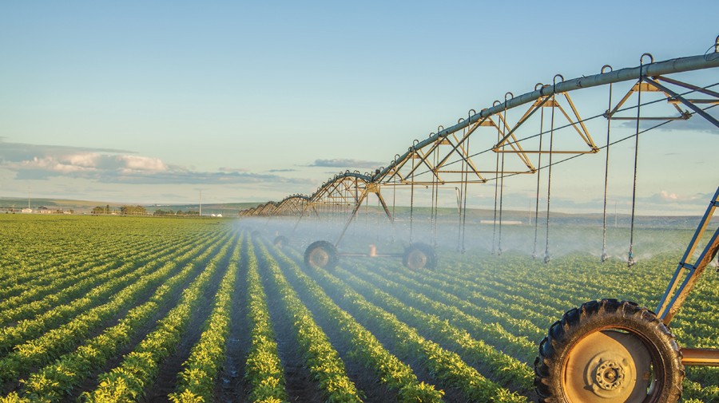
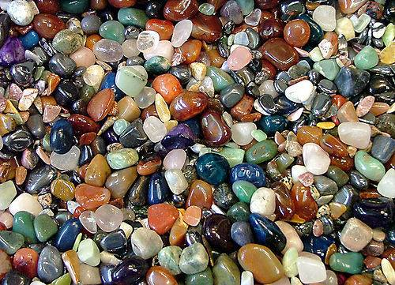

Home
Natural Resources of Nepal
Nepal is a small country but it is rich in Natural Resources. These natural resources are the gifts of the nature. Some of the important natural resources of Nepal are: Forest, Water, Soil or Land.
FOREST
Forest is one of the important natural resources. Different types of forests are found in different regions of Nepal. It occupies about 37% of the total land of Nepal. Forest is the source of all wood-based industries. Industries like paper, furniture and timber are based on the forest. Forests are rich in herbs. The herbs have medicinal values. Many medicines are made from these herbs. Timber and herbs are valuable natural resources. The value of timber and herbs is very high in the world market. There are many kinds of animals in the forests of Nepal. Forests provide food and shelter for these animals. Animals and birds add to the natural beauty of the country. People from many countries come to Nepal to see these beautiful birds and exotic wildlife. Many types of fruit and grasses grow in forests. People depend on them for their living and also to rear their livestock.

Water
Water is the most important natural resource of Nepal. Nepal is rich in water resource. Nature has been very kind to us by providing us with unlimited supply of water. Nepal is the second richest in the water resources in the world after Brazil. Nepal is a landlocked country. So Nepal does not have access to the sea or oceans. But there are lots of rivers that flow from the Himalayas. When snow melts in the Himalayas, the glacier and rivers are formed. The rivers flow through the mountain regions to the Terai. The main rivers of Nepal are Mechi, Koshi, Narayani, Gandaki, Karnali and Mahakali. These rivers have several tributaries. In addition to these Kankai, Bagmati, Trishuli, Marshyangi, Seti, Rapti, Bheri and also important rivers of Nepal.

Land
Land is the other natural resource of Nepal. In Nepal most people depend on land. They do farming and earn their living from land. Land includes soil and minerals. The cultivable land in Nepal is about 17%. About 38% of the land is rocky and covered with snow. Soil is an important factor for agriculture. It is not possible for people and animals to live on earth without soil. The land in Terai is very fertile. It is good for agriculture. So, the productivity of Terai is very high. The terai region is the storehouse of food grains. It is called the green belt of Nepal. There are many hills and mountains in Nepal. The surface is rugged and sloppy in the hills. When rainfall is heavy the top soil of the hills is washed away. Then it causes landslides. So, the trees should be planted and conserved to protect soil in the hills. Plants are the only means to hold the soil tightly and to stop erosion.

Minerals
Minerals like slate, stone, rock, coal, iron, copper, limestone, magnesite, mica and natural gas are natural resources. The marbles are made of rocks. Limestones are used in cement industries. Hetauda and Udaypur cement factories are the examples of such industries. Nepal is quite rich in mineral resources. Mineral deposits such as gold, mica, limestone, iron ore, copper are found in different parts of Nepal. Because of financial constraint and lack of technical and skilled manpower, progress in the field of mining is negligible. If we utilize the mineral resources of Nepal properly, we can earn foreign currencies and people will get job opportunities also.
